형태 수정 검토 중: FAF 부근의 큰 원형 선회가 포함된 기존 기하 후보입니다. 현재 SHP 분리는 완료했으며 항로 모양은 아직 변경하지 않았습니다. 이 결과를 최종 Approach/Departure 설계안으로 해석하지 마세요.
쌍마다 STAR 하나와 반대편 FAF의 SID 하나를 함께 선정합니다. STAR는 링→FAF, SID는 FAF→링으로 각각 새 시계방향 RSR을 계산합니다. SID를 STAR의 좌표 역순으로 만들지 않습니다.
링 350m, STAR 70→60kt, SID 60→70kt. 상승·하강 모두 2.36°와 250ft/NM 중 엄격한 제한 적용. 뱅크 ≤30°. 속도는 무풍 TAS로 가정하고 FAF alt를 사용합니다.
항로 간 거리는 전체 중심선의 XY 최소 거리이며 끝점도 포함합니다. 고정된 16개 FAF의 최소 간격이 77.15m라서 모든 항로 간격을 100m 이상으로 만드는 것은 불가능할 수 있습니다. 간격 목표는 연성 조건이고, 항로 교차를 강하게 벌점 처리합니다. 수직 분리로 XY 교차를 면제하지 않습니다.
inside_only는 원호와 직선의 해석적 최대 반경을 검사하여 링 밖으로 나가지 못하게 합니다. outside_allowed는 동일 후보에 링 밖 우회를 추가로 허용합니다. outside_detour는 각 항로가 링 반경보다 1m 이상 벗어나는 후보만 사용하는 추가 비교안입니다. 이전 STAR 단독 결과는 그대로 보존합니다.
STAR 8개 / SID 8개. 항로 교차 4쌍, 최소 XY 간격 0.00m, 길이 합 43.13km, 링 밖 우회 0개. Landing_Area 관통 34건 (penalized).
선정하지 못한 쌍: []. 후보 수 77,020, 조합 탐색용 후보 2,357.
교차 0건 추가 탐색: time_limit_no_zero_crossing_incumbent. 시간 제한으로 해를 찾지 못한 경우 교차 없는 해가 존재하지 않는다는 뜻은 아닙니다.
Approach 전용 SHP · Departure 전용 SHP · 항로 간격·교차 CSV
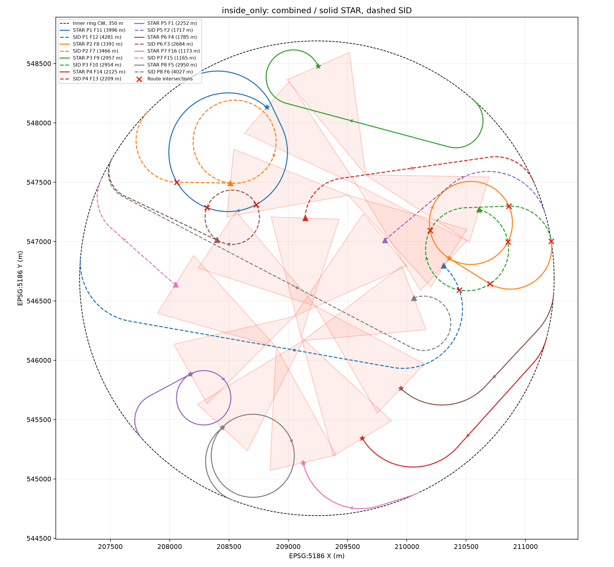
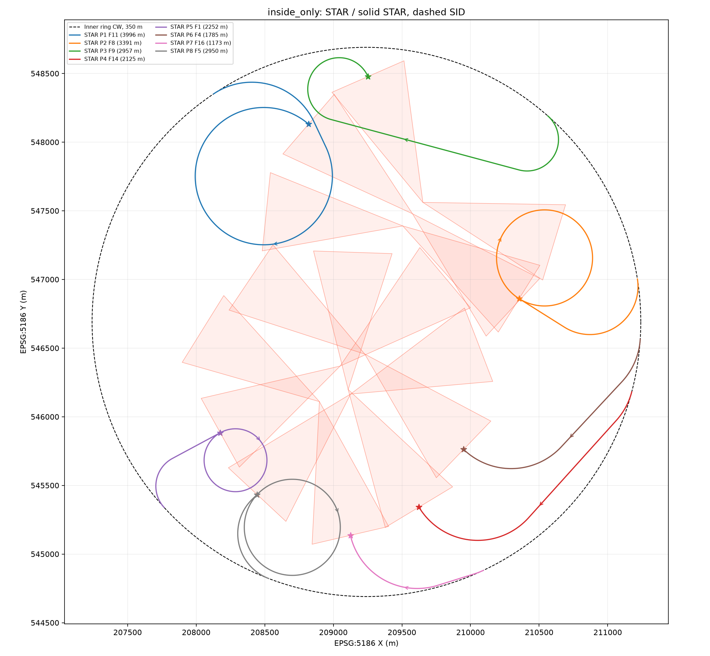
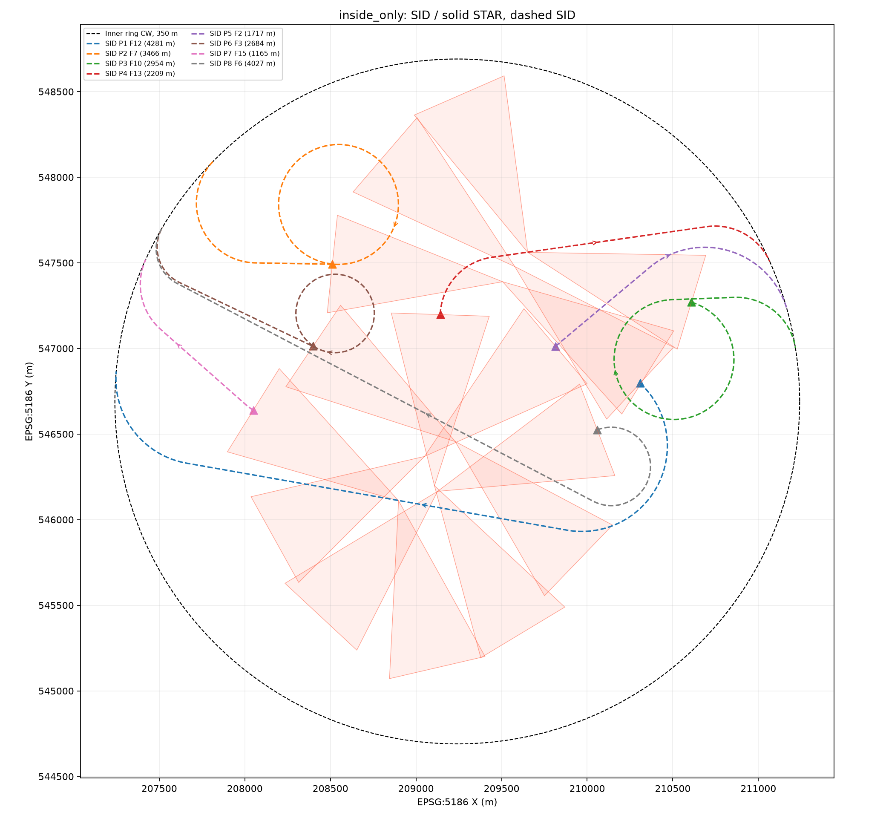
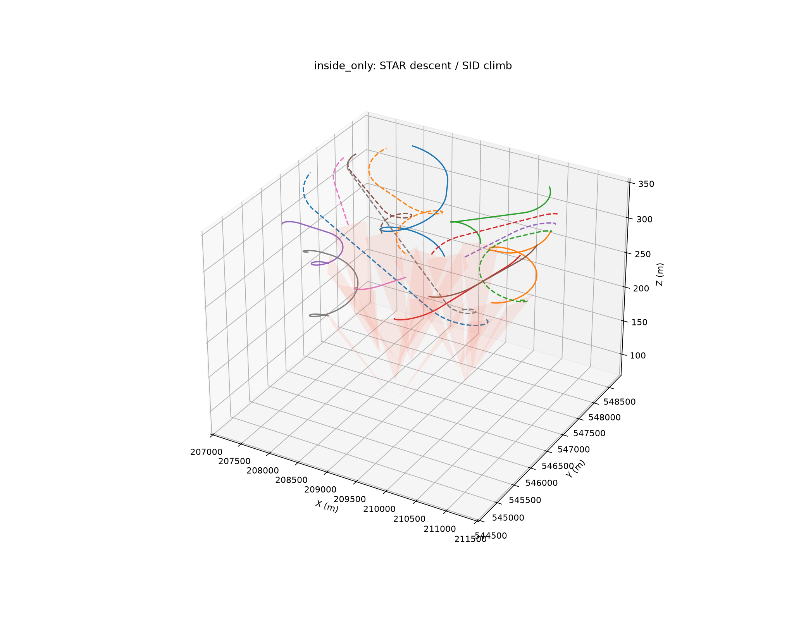
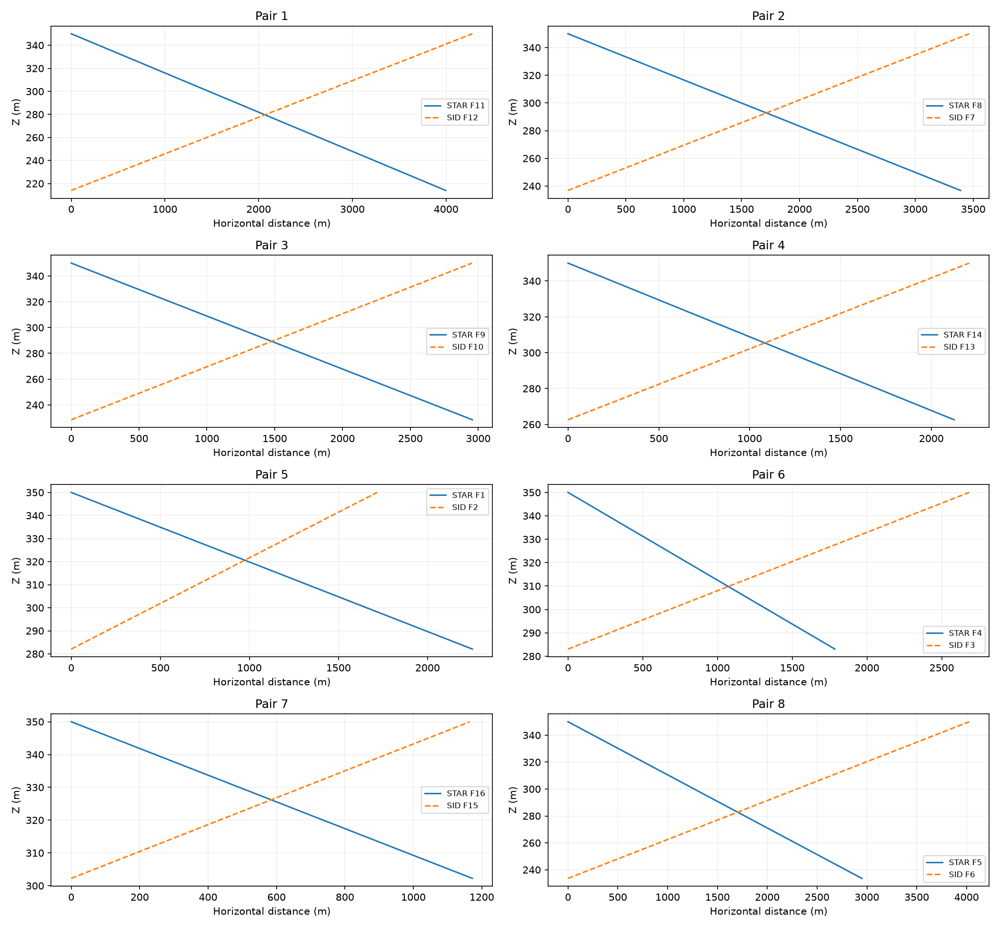
| operation | pair | faf_id | iaf_id | length_m | slope_deg | bank_deg | outside_m |
|---|---|---|---|---|---|---|---|
| STAR | 1 | 11 | 657 | 3996.09 | 1.95 | 14.81 | 0.00 |
| SID | 1 | 12 | 515 | 4281.18 | 1.82 | 14.81 | 0.00 |
| STAR | 2 | 8 | 976 | 3390.51 | 1.91 | 20.70 | 0.00 |
| SID | 2 | 7 | 625 | 3465.83 | 1.87 | 20.70 | 0.00 |
| STAR | 3 | 9 | 866 | 2957.26 | 2.35 | 30.00 | 0.00 |
| SID | 3 | 10 | 976 | 2954.25 | 2.36 | 20.70 | 0.00 |
| STAR | 4 | 14 | 42 | 2125.39 | 2.36 | 14.81 | 0.00 |
| SID | 4 | 13 | 934 | 2208.54 | 2.27 | 20.70 | 0.00 |
| STAR | 5 | 1 | 383 | 2251.84 | 1.73 | 30.00 | 0.00 |
| SID | 5 | 2 | 958 | 1717.18 | 2.27 | 14.81 | 0.00 |
| STAR | 6 | 4 | 11 | 1785.37 | 2.15 | 14.81 | 0.00 |
| SID | 6 | 3 | 586 | 2684.13 | 1.43 | 30.00 | 0.00 |
| STAR | 7 | 16 | 181 | 1172.66 | 2.33 | 14.81 | 0.00 |
| SID | 7 | 15 | 569 | 1165.28 | 2.35 | 20.70 | 0.00 |
| STAR | 8 | 5 | 309 | 2949.75 | 2.26 | 20.70 | 0.00 |
| SID | 8 | 6 | 585 | 4026.95 | 1.66 | 30.00 | 0.00 |
STAR 8개 / SID 8개. 항로 교차 2쌍, 최소 XY 간격 0.00m, 길이 합 44.56km, 링 밖 우회 6개. Landing_Area 관통 18건 (penalized).
선정하지 못한 쌍: []. 후보 수 111,466, 조합 탐색용 후보 2,538.
교차 0건 추가 탐색: time_limit_no_zero_crossing_incumbent. 시간 제한으로 해를 찾지 못한 경우 교차 없는 해가 존재하지 않는다는 뜻은 아닙니다.
Approach 전용 SHP · Departure 전용 SHP · 항로 간격·교차 CSV
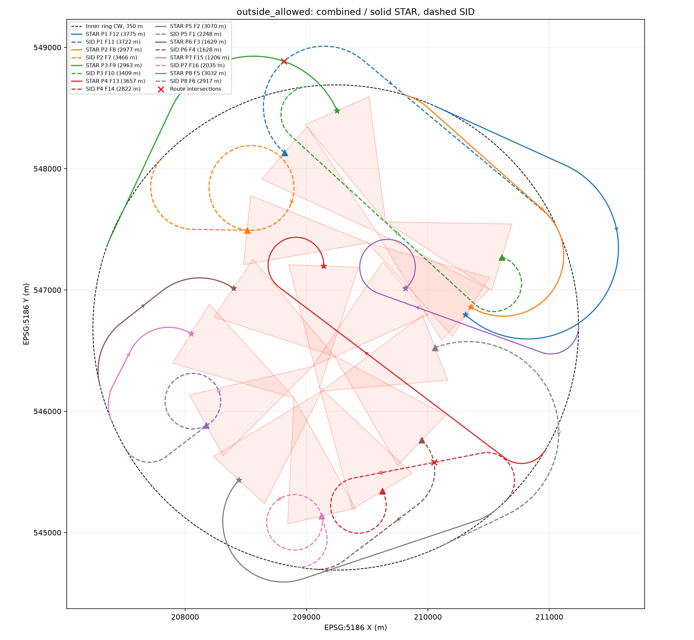
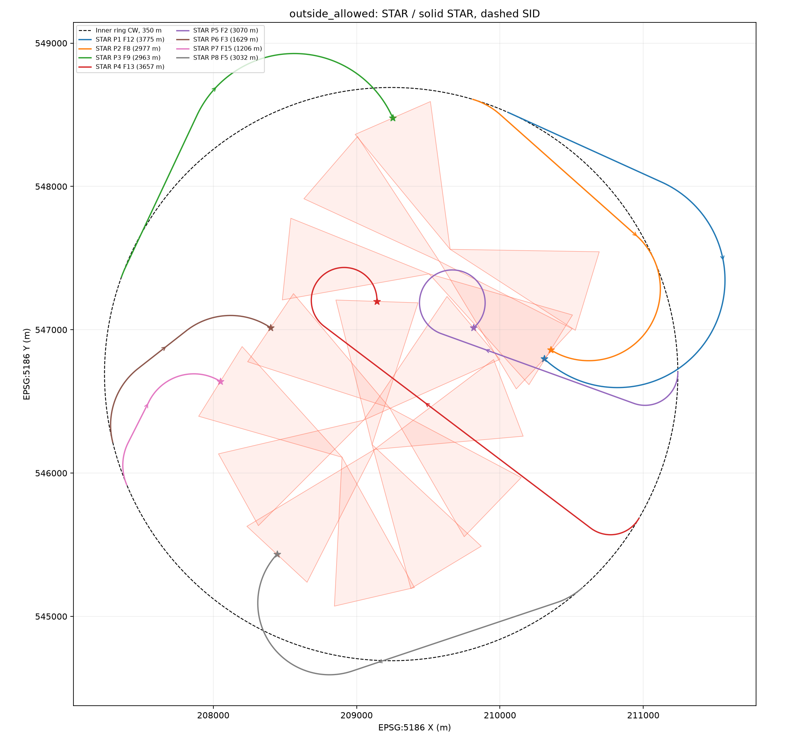
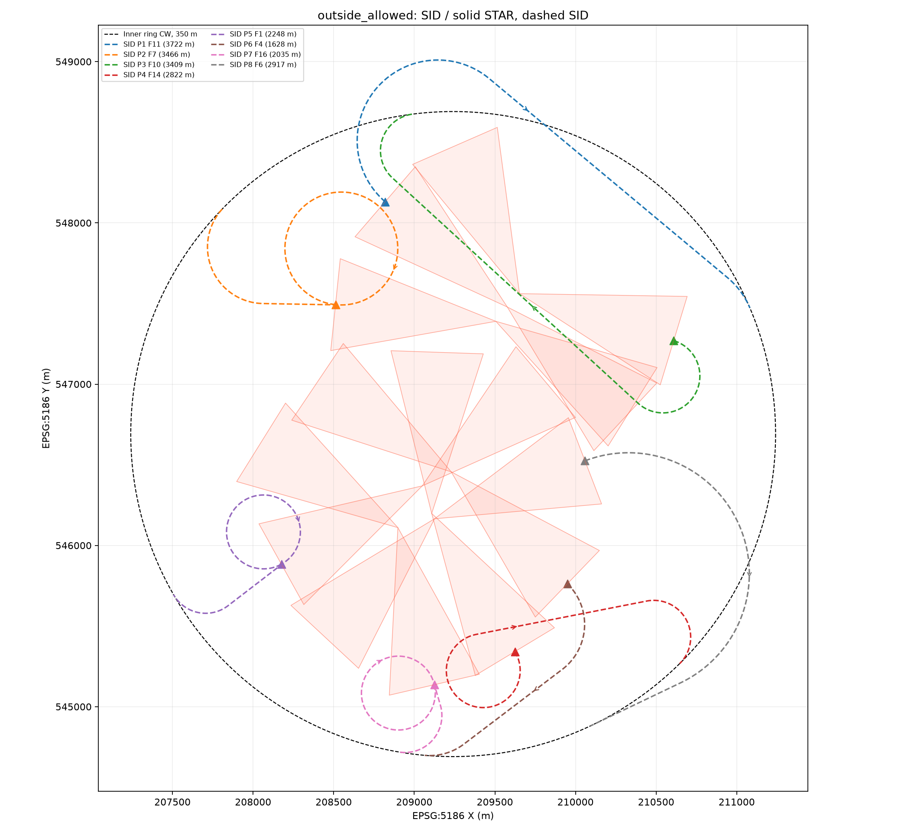
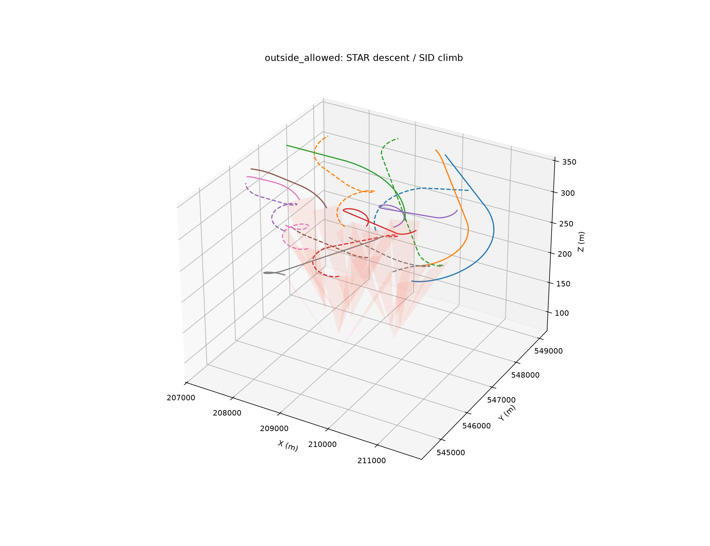
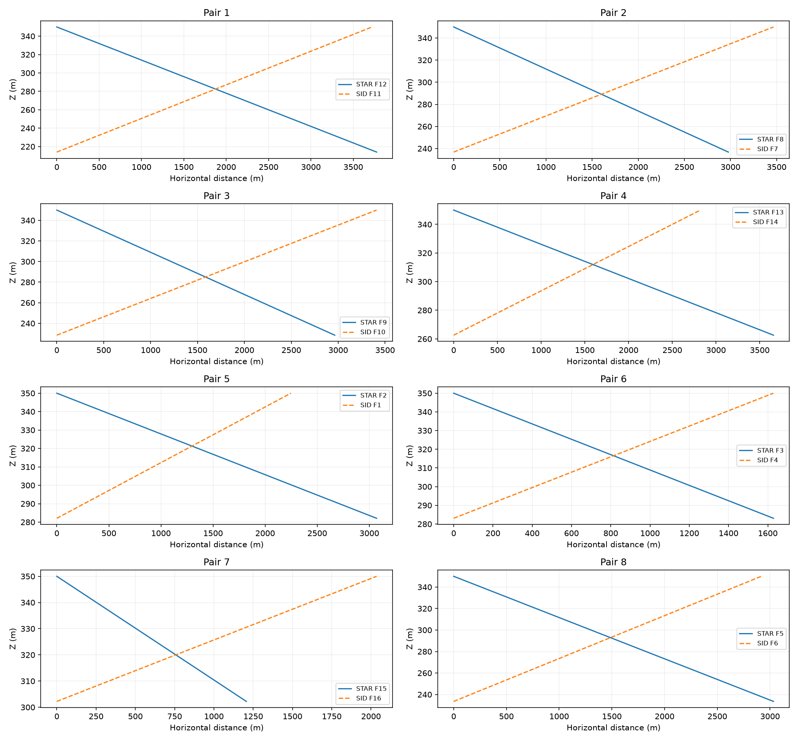
| operation | pair | faf_id | iaf_id | length_m | slope_deg | bank_deg | outside_m |
|---|---|---|---|---|---|---|---|
| STAR | 1 | 12 | 818 | 3775.38 | 2.06 | 10.00 | 2754.79 |
| SID | 1 | 11 | 937 | 3722.31 | 2.09 | 14.81 | 1485.13 |
| STAR | 2 | 8 | 797 | 2976.66 | 2.18 | 14.81 | 35.42 |
| SID | 2 | 7 | 625 | 3465.83 | 1.87 | 20.70 | 0.00 |
| STAR | 3 | 9 | 556 | 2963.28 | 2.35 | 10.00 | 2376.66 |
| SID | 3 | 10 | 731 | 3409.32 | 2.04 | 30.00 | 0.00 |
| STAR | 4 | 13 | 85 | 3656.67 | 1.37 | 30.00 | 0.00 |
| SID | 4 | 14 | 127 | 2822.38 | 1.77 | 30.00 | 0.00 |
| STAR | 5 | 2 | 1000 | 3069.99 | 1.27 | 30.00 | 0.00 |
| SID | 5 | 1 | 418 | 2247.98 | 1.73 | 30.00 | 0.00 |
| STAR | 6 | 3 | 463 | 1628.78 | 2.35 | 14.81 | 0.00 |
| SID | 6 | 4 | 265 | 1628.29 | 2.35 | 20.70 | 0.00 |
| STAR | 7 | 15 | 438 | 1206.31 | 2.27 | 20.70 | 0.00 |
| SID | 7 | 16 | 278 | 2035.41 | 1.34 | 30.00 | 0.00 |
| STAR | 8 | 5 | 135 | 3032.31 | 2.20 | 14.81 | 979.19 |
| SID | 8 | 6 | 181 | 2917.19 | 2.29 | 10.00 | 1517.07 |
STAR 6개 / SID 6개. 항로 교차 7쌍, 최소 XY 간격 0.00m, 길이 합 38.66km, 링 밖 우회 12개. Landing_Area 관통 7건 (penalized).
선정하지 못한 쌍: [4, 5]. 후보 수 33,563, 조합 탐색용 후보 1,677.
교차 0건 추가 탐색: time_limit_no_zero_crossing_incumbent. 시간 제한으로 해를 찾지 못한 경우 교차 없는 해가 존재하지 않는다는 뜻은 아닙니다.
Approach 전용 SHP · Departure 전용 SHP · 항로 간격·교차 CSV
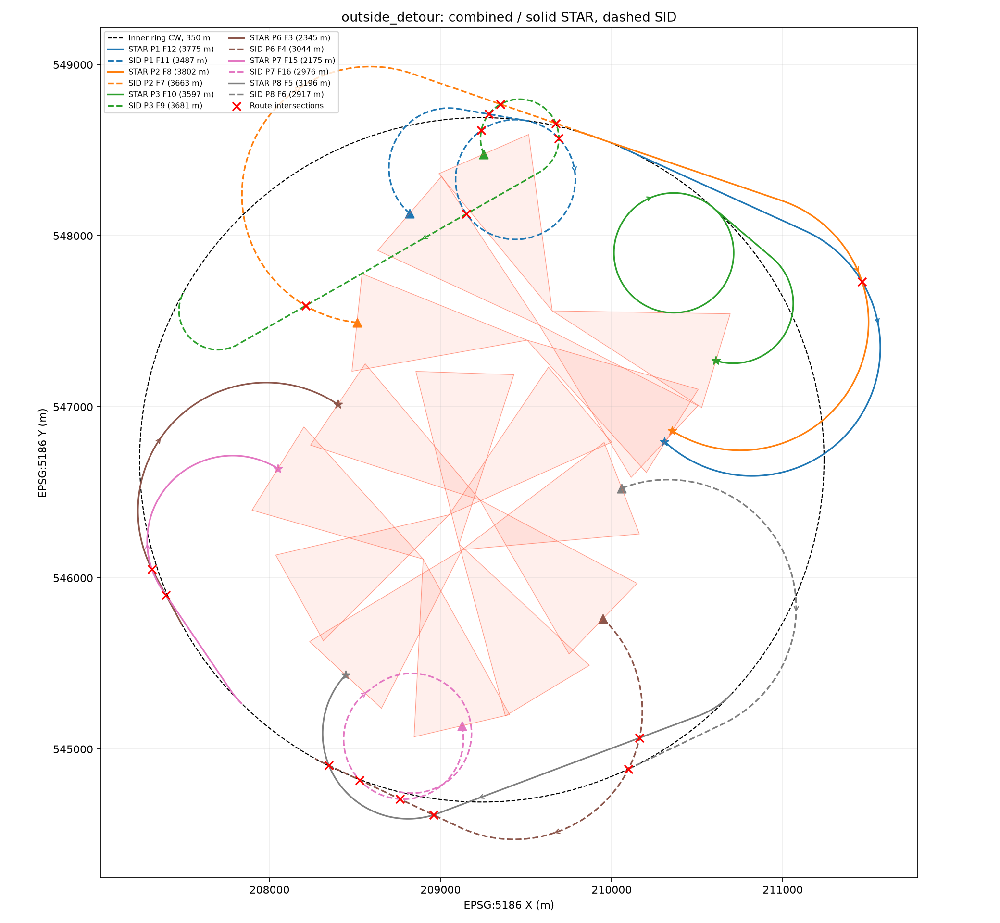
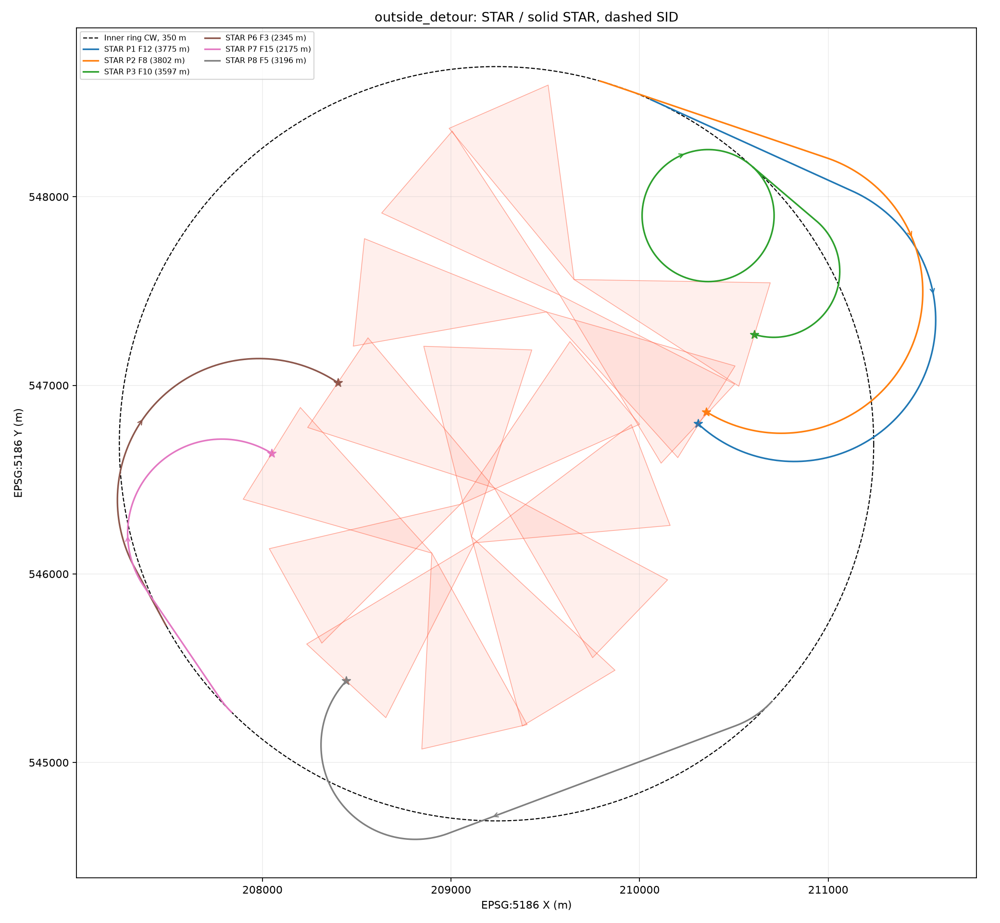
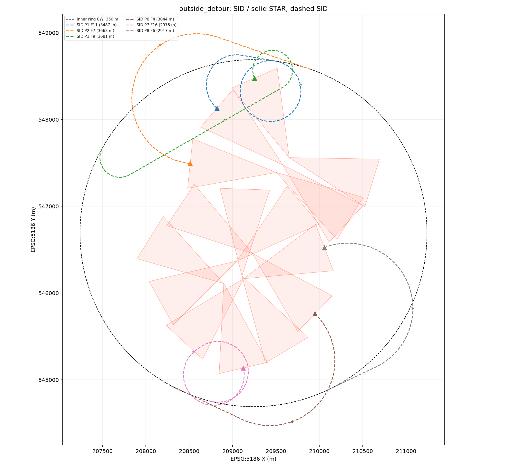
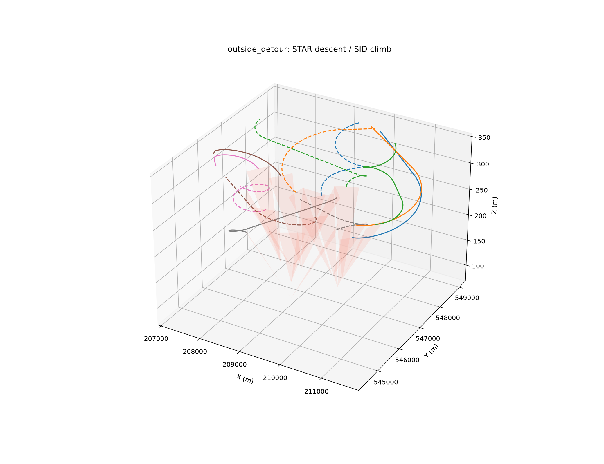
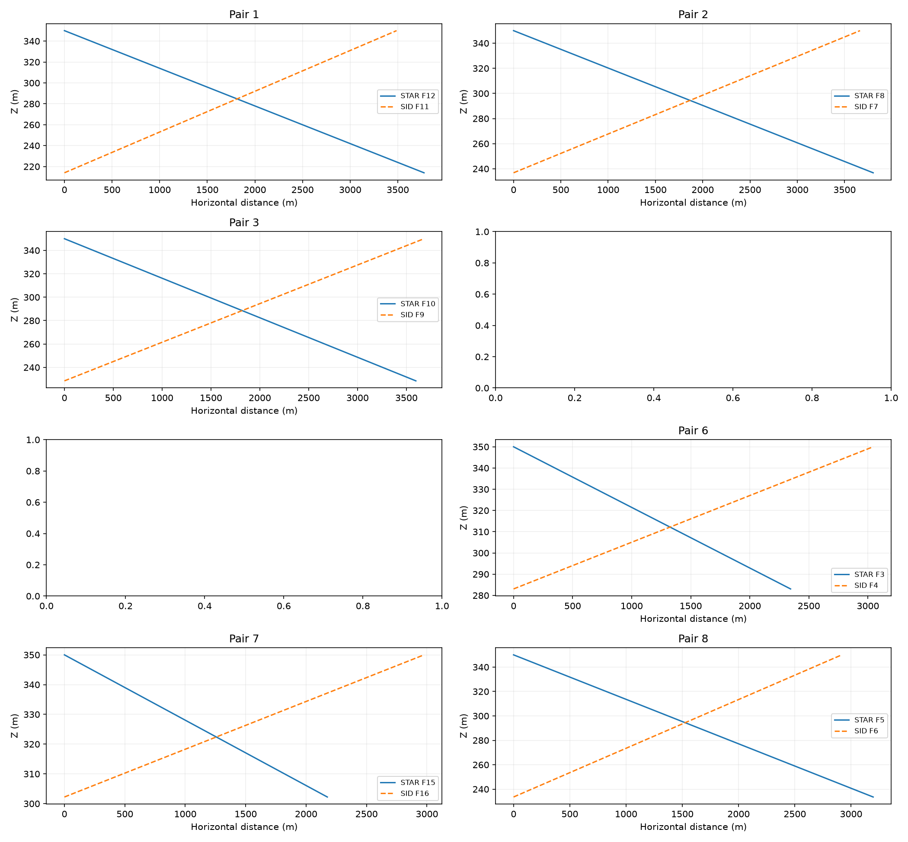
| operation | pair | faf_id | iaf_id | length_m | slope_deg | bank_deg | outside_m |
|---|---|---|---|---|---|---|---|
| STAR | 1 | 12 | 818 | 3775.38 | 2.06 | 10.00 | 2754.79 |
| SID | 1 | 11 | 770 | 3487.28 | 2.23 | 20.70 | 726.66 |
| STAR | 2 | 8 | 795 | 3802.27 | 1.71 | 10.00 | 2684.77 |
| SID | 2 | 7 | 805 | 3663.45 | 1.77 | 10.00 | 2662.80 |
| STAR | 3 | 10 | 870 | 3597.09 | 1.93 | 20.70 | 823.36 |
| SID | 3 | 9 | 583 | 3680.60 | 1.89 | 30.00 | 518.18 |
| STAR | 6 | 3 | 421 | 2345.00 | 1.64 | 10.00 | 862.63 |
| SID | 6 | 4 | 332 | 3044.27 | 1.26 | 10.00 | 1848.79 |
| STAR | 7 | 15 | 375 | 2175.49 | 1.26 | 14.81 | 434.82 |
| SID | 7 | 16 | 291 | 2975.74 | 0.92 | 20.70 | 398.48 |
| STAR | 8 | 5 | 121 | 3196.10 | 2.09 | 14.81 | 960.21 |
| SID | 8 | 6 | 181 | 2917.19 | 2.29 | 10.00 | 1517.07 |
먼저 각 시나리오에서 Landing_Area 관통 없는 STAR/SID 쌍 구성이 가능한지 검사합니다. 8개 쌍을 모두 구성할 수 없을 때만 관통 개수·길이·표면 높이 차 페널티를 적용합니다. 반경·구배·시계방향·링 내부 경계 같은 기하 조건은 완화하지 않습니다. 해당 조건으로 구성할 수 없는 쌍은 보고서와 JSON에 누락으로 명시합니다.
개별 후보 전수 평가 후, 각 운항방향·FAF의 점수 상위 후보와 링 구간별 분산 후보를 모아 STAR/SID 쌍 단위 다중 시작 좌표하강법으로 공동 선정합니다. 교차 쌍 수, 최소 간격 부족, 전체 항로 쌍의 간격 부족, 노드 집중, 항로 길이·뱅크각이 목적함수에 들어갑니다. 전체 후보 조합의 전역 최적성이나 ‘해가 존재하지 않음’을 증명하지 않습니다. 교차가 남으면 제한 시간 내 MILP로 교차 없는 조합을 추가로 찾습니다. 이 탐색이 성공하면 교차 0건을 유지하며 간격을 재개선합니다. 시나리오별 독립 휴리스틱 결과이므로 우회 허용의 수치가 내부 제한보다 항상 우수하다는 보장은 없습니다.
원호는 최대 0.02m 현 오차로 저장하고, 최종 XY 교차·간격은 원본 해상도의 저장 폴리라인으로 다시 검사합니다. 간격 분석은 실제 비행 시각을 고려한 충돌 분석이 아닙니다. 기체별 성능 승인·바람·지형·건물 장애물·롤 전이는 포함하지 않습니다.
python -B 수정본_20261103/코드/optimization_path.py # 간격 목표와 교차 페널티 변경 (기하 후보 캐시는 재사용) python -B 수정본_20261103/코드/optimization_path.py --spacing-target 150 --route-cross-weight 2000000 # 이전 STAR 단독 분석 모드 python -B 수정본_20261103/코드/optimization_path.py --star-only --reuse-metrics
모든 후보 지표: all_star_sid_candidates.csv. 설정·해시·선정 요약: summary.json. 각 폴더의 vertices.csv에는 Z·속도·시간, route_pair_spacing.csv에는 STAR–STAR, SID–SID, STAR–SID 모든 조합의 최소 간격과 교차 여부가 있습니다.